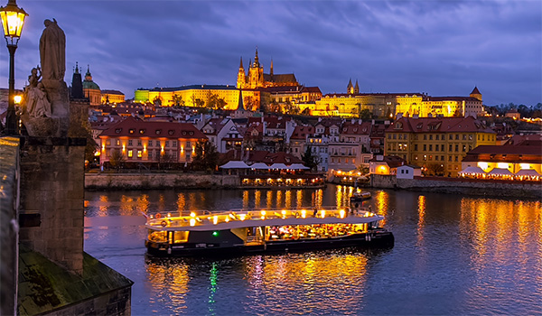
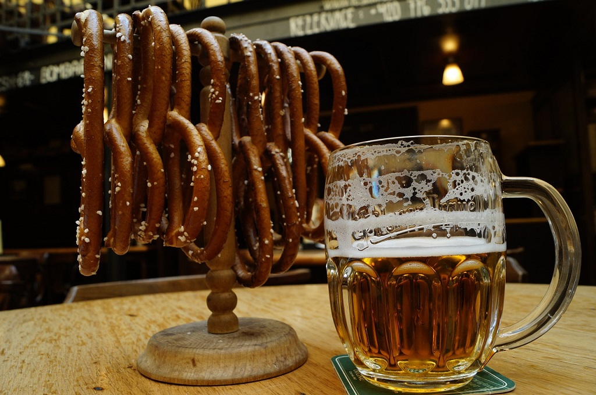
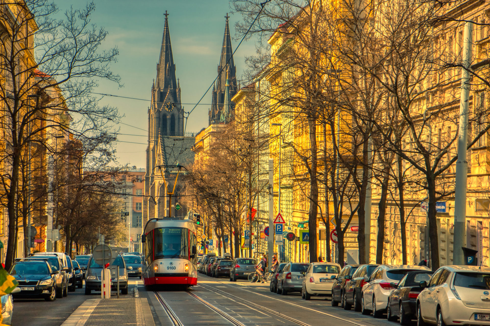
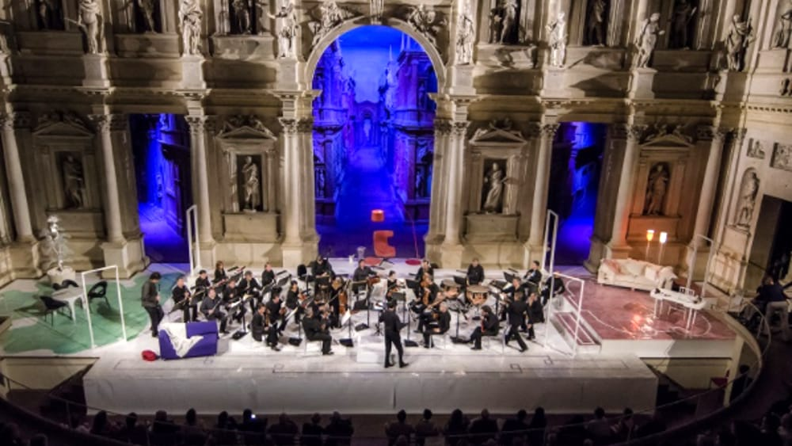
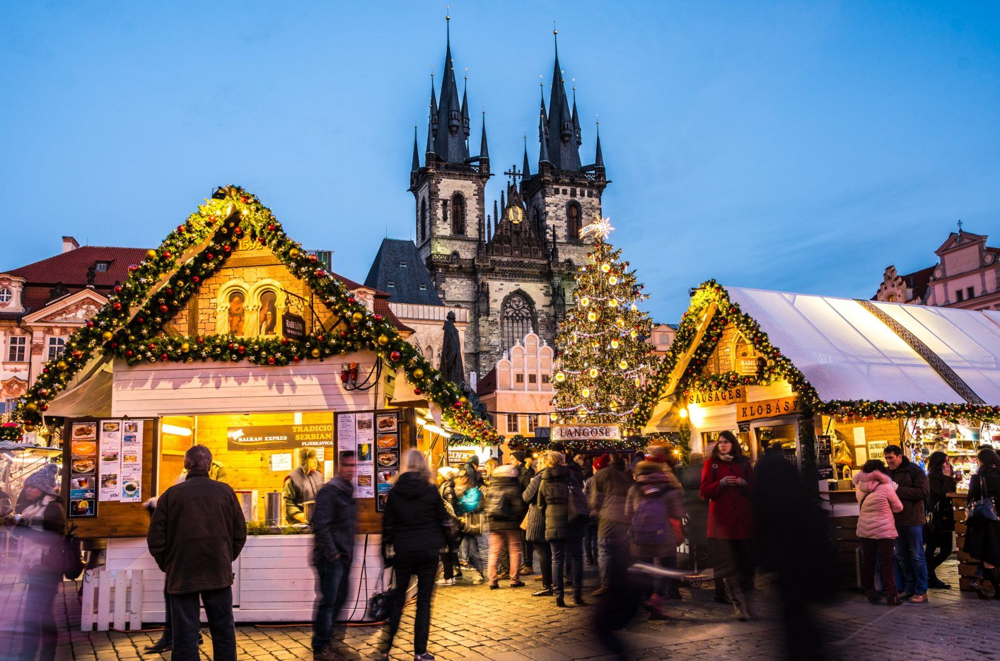

Tour in battello sulla Moldava
Un'esperienza rilassante per ammirare Praga dall'acqua.
Visita ai birrifici storici
Scopri la tradizione della birra ceca con degustazioni uniche.
Passeggiata nel quartiere di Vinohrady
Un quartiere elegante con caffè alla moda e parchi pittoreschi.
Concerto di musica classica
Goditi un'esperienza musicale in una delle storiche sale da concerto di Praga.
Mercatini di Natale
Vicoli pittoreschi e architettura barocca.